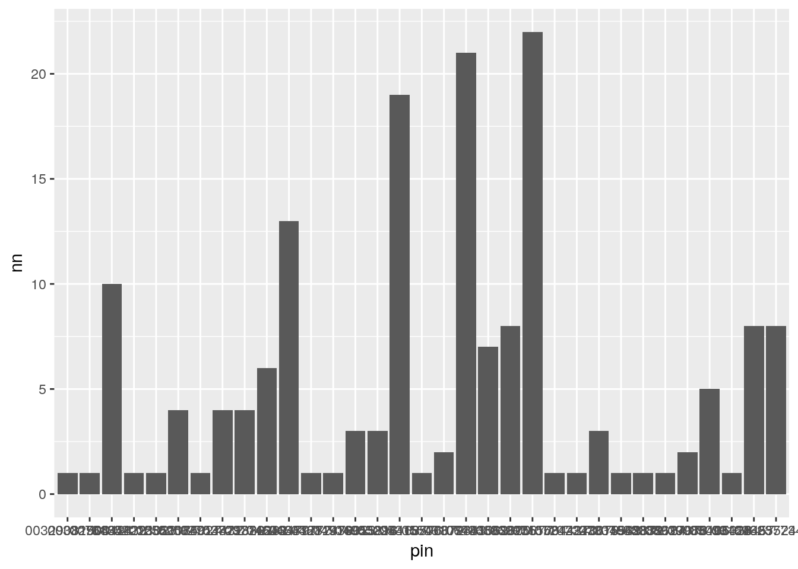

Last updated: 2018-09-07
workflowr checks: (Click a bullet for more information) ✖ R Markdown file: uncommitted changes
The R Markdown file has unstaged changes. To know which version of the R Markdown file created these results, you’ll want to first commit it to the Git repo. If you’re still working on the analysis, you can ignore this warning. When you’re finished, you can run wflow_publish to commit the R Markdown file and build the HTML.
✔ Environment: empty
Great job! The global environment was empty. Objects defined in the global environment can affect the analysis in your R Markdown file in unknown ways. For reproduciblity it’s best to always run the code in an empty environment.
✔ Seed:
set.seed(20180831)
The command set.seed(20180831) was run prior to running the code in the R Markdown file. Setting a seed ensures that any results that rely on randomness, e.g. subsampling or permutations, are reproducible.
✔ Session information: recorded
Great job! Recording the operating system, R version, and package versions is critical for reproducibility.
✔ Repository version: 145bd00
wflow_publish or wflow_git_commit). workflowr only checks the R Markdown file, but you know if there are other scripts or data files that it depends on. Below is the status of the Git repository when the results were generated:
Ignored files:
Ignored: data/opioid_full.csv
Ignored: data/opioid_people_full.csv
Ignored: explore/
Unstaged changes:
Modified: analysis/findDoctorShopping.Rmd
| File | Version | Author | Date | Message |
|---|---|---|---|---|
| Rmd | 145bd00 | Dennis Wollersheim | 2018-08-31 | Initial _rr analysis with interval join |
Get all
intersect_filename = 'data/df_intersect.rda'
source('lib/functions.R')
source( "lib/get_data.R")
# -------------------------------------------------
my_db_get_query ( "
select pin, spply_dt, pbs_code, pbs_rgltn24_adjst_qty as quantity
from pbs_rr
JOIN pbs_item pi USING (pbs_code)
WHERE pi.atc_code LIKE 'N02A%' ") %>%
as.tibble() %>%
{ . } -> df_opioid
my_db_get_query ( " select * from patient_rr ") %>%
as.tibble() %>%
mutate( age = 2004 - yob ,
age_group=cut( age, breaks=0:6*20 )) %>%
{ . } -> df_people
my_db_get_query ( "
select pin, date_of_service as spply_dt, spr, spr_rsp, rpr
from mbs_rr where item in (
select item
from mbs_rr JOIN mbs_desc_latest USING (item)
where description like '%attendance%'
group by 1
order by count(*) desc
limit 20
)") %>%
as.tibble() %>%
{ . } -> df_mbs
if (file.exists( intersect_filename )) {
load( intersect_filename, verbose=TRUE )
} else {
#
df_opioid %>%
group_by(pin) %>%
mutate( end_date = spply_dt + 7,
start_date = spply_dt - 7) %>%
select( pin, pbs_code, quantity, spply_dt, start_date, end_date) %>%
nest( pbs_code, spply_dt, start_date, end_date, quantity, .key=pbs ) %>%
{ . } -> df_pbs_nested
#
df_mbs %>%
group_by(pin) %>%
mutate( end_date = spply_dt + 7,
start_date = spply_dt - 7) %>%
select( pin, spr, spply_dt, start_date, end_date) %>%
nest( spr, spply_dt, start_date, end_date, .key=mbs ) %>%
{ . } -> df_mbs_nested
#
no_cores <- detectCores() - 1
cluster <- create_cluster(no_cores)
df_mbs_nested %>%
inner_join( df_pbs_nested ) %>%
partition(pin, cluster=cluster ) %>%
{ . } -> df_both
#
cluster_library(df_both, c("tidyverse", "IRanges", "fuzzyjoin"))
#
df_both %>%
do( joined = interval_inner_join( data.frame(.$mbs),
data.frame(.$pbs),
by=c('start_date','end_date') )) %>%
collect() %>%
ungroup() %>%
unnest() %>%
{ . } -> df_intersect
#
save(df_intersect, file=intersect_filename)
}df_intersect %>%
count( pin, spr ) %>%
count( pin, sort=TRUE ) %>%
ggplot( aes( pin, nn ) ) + geom_col()
df_intersect %>%
count(pin, sort=TRUE) # A tibble: 33 x 2
pin n
<chr> <int>
1 06107781069 255
2 06993510041 246
3 03774643479 212
4 09623773491 119
5 04606387777 108
6 00768348391 94
7 07242243679 87
8 09164365524 74
9 05024418576 45
10 00329081500 42
# ... with 23 more rowsdf_intersect %>%
count(pin, spr, sort=TRUE) # A tibble: 166 x 3
pin spr n
<chr> <chr> <int>
1 06993510041 043548836 150
2 03774643479 098440553 111
3 07242243679 003376718 87
4 03774643479 080655179 84
5 09623773491 077403346 80
6 04606387777 071837344 74
7 00768348391 019215297 62
8 06107781069 015064182 62
9 00329081500 041154489 42
10 06107781069 042904384 38
# ... with 156 more rowsdf_intersect %>%
filter( pin=="06107781069") # A tibble: 255 x 10
pin spr spply_dt.x start_date.x end_date.x pbs_code spply_dt.y
<chr> <chr> <date> <date> <date> <chr> <date>
1 0610… 0150… 2012-11-21 2012-11-14 2012-11-28 08866P 2012-11-08
2 0610… 0150… 2012-11-21 2012-11-14 2012-11-28 08866P 2012-11-23
3 0610… 0150… 2012-11-21 2012-11-14 2012-11-28 08866P 2012-11-29
4 0610… 0143… 2012-12-05 2012-11-28 2012-12-12 08866P 2012-11-23
5 0610… 0143… 2012-12-05 2012-11-28 2012-12-12 08866P 2012-11-29
6 0610… 0284… 2012-11-15 2012-11-08 2012-11-22 08866P 2012-11-08
7 0610… 0284… 2012-11-15 2012-11-08 2012-11-22 08866P 2012-11-23
8 0610… 0284… 2012-11-15 2012-11-08 2012-11-22 08866P 2012-11-29
9 0610… 0568… 2012-03-14 2012-03-07 2012-03-21 08523N 2012-03-28
10 0610… 0568… 2012-03-14 2012-03-07 2012-03-21 08611F 2012-03-07
# ... with 245 more rows, and 3 more variables: start_date.y <date>,
# end_date.y <date>, quantity <int>sessionInfo()R version 3.4.4 (2018-03-15)
Platform: x86_64-pc-linux-gnu (64-bit)
Running under: Ubuntu 17.10
Matrix products: default
BLAS: /usr/lib/x86_64-linux-gnu/openblas/libblas.so.3
LAPACK: /usr/lib/x86_64-linux-gnu/libopenblasp-r0.2.20.so
locale:
[1] LC_CTYPE=en_AU.UTF-8 LC_NUMERIC=C
[3] LC_TIME=en_AU.UTF-8 LC_COLLATE=en_AU.UTF-8
[5] LC_MONETARY=en_AU.UTF-8 LC_MESSAGES=en_AU.UTF-8
[7] LC_PAPER=en_AU.UTF-8 LC_NAME=C
[9] LC_ADDRESS=C LC_TELEPHONE=C
[11] LC_MEASUREMENT=en_AU.UTF-8 LC_IDENTIFICATION=C
attached base packages:
[1] stats4 parallel stats graphics grDevices utils datasets
[8] methods base
other attached packages:
[1] fuzzyjoin_0.1.4 bindrcpp_0.2.2 keyring_1.1.0
[4] RPostgreSQL_0.6-2 DBI_1.0.0 forcats_0.3.0
[7] dplyr_0.7.6 purrr_0.2.5 readr_1.1.1
[10] tidyr_0.8.1 tibble_1.4.2 ggplot2_2.2.1
[13] tidyverse_1.2.1 multidplyr_0.0.0.9000 IRanges_2.12.0
[16] S4Vectors_0.16.0 BiocGenerics_0.24.0 lubridate_1.7.4
[19] workflowr_1.1.1 pander_0.6.2 kableExtra_0.9.0
[22] knitr_1.20 stringr_1.3.1 wrapr_1.5.1
[25] nvimcom_0.9-75
loaded via a namespace (and not attached):
[1] Rcpp_0.12.18 lattice_0.20-35 utf8_1.1.4
[4] assertthat_0.2.0 rprojroot_1.3-2 digest_0.6.15
[7] R6_2.2.2 cellranger_1.1.0 plyr_1.8.4
[10] backports_1.1.2 evaluate_0.10.1 httr_1.3.1
[13] pillar_1.3.0 rlang_0.2.1 lazyeval_0.2.1
[16] readxl_1.1.0 rstudioapi_0.7 whisker_0.3-2
[19] R.utils_2.6.0 R.oo_1.22.0 rmarkdown_1.10
[22] labeling_0.3 munsell_0.5.0 broom_0.5.0
[25] compiler_3.4.4 modelr_0.1.2 pkgconfig_2.0.1
[28] htmltools_0.3.6 tidyselect_0.2.4 fansi_0.2.3
[31] viridisLite_0.3.0 crayon_1.3.4 R.methodsS3_1.7.1
[34] grid_3.4.4 nlme_3.1-137 jsonlite_1.5
[37] gtable_0.2.0 git2r_0.23.0 magrittr_1.5
[40] scales_0.5.0 cli_1.0.0 stringi_1.2.3
[43] xml2_1.2.0 tools_3.4.4 glue_1.3.0
[46] hms_0.4.2 yaml_2.1.19 colorspace_1.3-2
[49] rvest_0.3.2 bindr_0.1.1 haven_1.1.2 This reproducible R Markdown analysis was created with workflowr 1.1.1